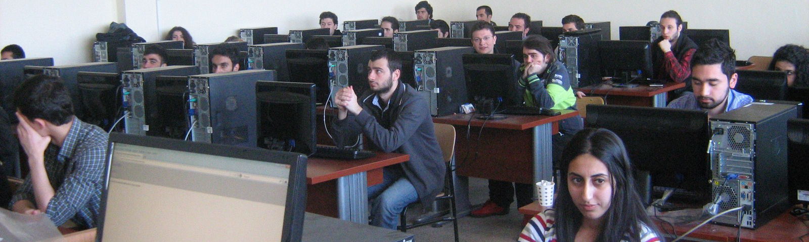

T.C.
TEKİRDAĞ NAMIK KEMAL ÜNİVERSİTESİ
YAZ OKULU YÖNERGESİ
BİRİNCİ BÖLÜM
Amaç, Kapsam, Dayanak ve Tanımlar
Amaç
MADDE 1 – (1) Bu Yönergenin amacı; Tekirdağ Namık Kemal Üniversitesine bağlı fakülte (Tıp Fakültesi ve Diş Hekimliği Fakültesi hariç), yüksekokul ve meslek yüksekokullarında, güz ve bahar yarıyılları dışında kalan yaz aylarında yapılacak olan yaz eğitim-öğretimine ilişkin usul ve esasları düzenlemektir.
Kapsam
MADDE 2 – (1) Bu Yönerge; Tekirdağ Namık Kemal Üniversitesi önlisans ve lisans düzeylerinde yapılacak yaz eğitim-öğretiminde uygulanacak usul ve esaslara ilişkin hükümleri kapsar.
Dayanak
MADDE 3 – (1) Bu Yönerge; 4/11/1981 tarihli ve 2547 sayılı Yükseköğretim Kanununun 7., 14. ve Ek 26. maddelerine dayanılarak hazırlanmıştır.
Tanımlar
MADDE 4 – (1) Bu Yönergede geçen;
a) Üniversite: Tekirdağ Namık Kemal Üniversitesini,
b) Rektör: Üniversite Rektörünü,
c) Senato: Üniversite Senatosunu,
ç) Yönetim Kurulu: Üniversite Yönetim Kurulunu,
d) İlgili Yönetim Kurulu: Üniversiteye bağlı fakülte, yüksekokul veya meslek yüksekokulları yönetim kurullarını,
e) Yaz Okulu: Tekirdağ Namık Kemal Üniversitesinde önlisans ve lisans programlarının bir eğitim-öğretim yılının güz ve bahar yarıyılları dışında kalan ve yaz aylarında uygulanan eğitimöğretim programını,
f) Kurul Tekirdağ Namık Kemal Üniversitesi Yaz Okulu Koordinasyon Kurulunu ifade eder.
İKİNCİ BÖLÜM
Yaz Okulunun Amaçları, Yönetimi, Eğitim-Öğretime İlişkin Esaslar
Yaz okulunun amacı
MADDE 5 – (1) Yaz okulunun amaçları şunlardır;
a) Öğrencilerin, yaz aylarında da eğitim-öğretim imkânlarından faydalanmalarını sağlayarak, Üniversitede eğitim-öğretimin verimliliğini arttırmak,
b) Öğrencilerin güz ve bahar yarıyıllarında alıp da başarısız oldukları, devam edemedikleri veya çeşitli nedenlerden dolayı ilgili dönemlerde alamadıkları dersleri, yaz döneminde almalarına imkân sağlamak,
c) Üniversite öğrencilerinin öngörülen eğitim-öğretim süresinde veya başarılı öğrencilerin öğrenimlerini daha erken bitirebilmelerine olanak sağlamak,
d) Diğer yükseköğretim kurumlarındaki öğrencilerin Tekirdağ Namık Kemal Üniversitesinin eğitim-öğretim olanaklarından yararlanmalarını sağlamak.
Yaz okulunun yönetimi
MADDE 6 – (1) Yaz okulu, Rektör tarafından görevlendirilen bir Rektör Yardımcısı Başkanlığında oluşan Yaz Okulu Koordinasyon Kurulu tarafından yönetilir. Yaz okulu ile ilgili sorunlar bu Kurul tarafından çözümlenir.
Yaz okulu takvimi ve süresi
MADDE 7 – (1) Yaz okulu takvimi ve süresi şunlardır;
a) Yaz okulunda ders açılması, derslere kayıt, derslerin başlangıç ve bitişi, sınavlar ve diğer ilgili hususlar Üniversite akademik takvimine göre belirlenerek Yaz Okulu Koordinasyon Kurulu tarafından yürütülür.
b) Yaz okulunda eğitim-öğretim süresi en az yedi (7) hafta süre ile 35 gündür. Bu süreyi izleyen hafta içerisinde yaz okulu sonu sınavları yapılır. Haftalık ders saati, normal eğitim-öğretim dönemi haftalık ders saatinin iki katıdır. Yaz döneminde verilecek her ders için normal eğitim-öğretim dönemindeki ders saati kadar ders yapılır.
c) Yaz okulunda açılan dersler için en az bir ara sınav ve bir yaz okulu sonu sınavı yapılır. Ara sınava ve yaz okulu sonu sınavına sadece yaz okuluna kayıtlı öğrenciler girer.
d) Yaz okulunda sadece ara sınava giremeyenler öğrenciler için ilgili yönetim kurulu kararıyla mazeret sınavı açılabilir. Yaz okulu sonu sınavına giremeyen öğrenciler için bütünleme sınavı yapılmaz.
e) Yaz okulunda geçen süre, eğitim-öğretim süresinden sayılmaz.
f) Yaz okulu ayrı bir yarıyıl olarak kabul edilemez.
Derslerin açılması, ders sorumlularının belirlenmesi ve öğrenci sayıları
MADDE 8 – (1) Derslerin açılması, ders sorumlularının belirlenmesi ve öğrenci sayıları ile ilgili hususlar şunlardır;
a) Önlisans ve lisans kapsamındaki dersler (zorunlu ve seçmeli), birinci ve ikinci eğitimöğretim programları için açılabilir. Ancak, bu programlarda normal olarak güz ve bahar yarıyıllarında açılması gereken dersler, yaz okulu programına ertelenemez.
b) Lisans programlarında, ilgili bölümlerin bölüm kurulu önerisi üzerine fakülte/yüksekokulu yönetim kurulu tarafından karara bağlanır.
c) Önlisans programlarında, ilgili bölümlerin bölüm kurulu önerisi üzerine meslek yüksekokulu yönetim kurulu tarafından karara bağlanır.
d) Gerekli koşullar oluştuğu takdirde daha önce açılacağı ilan edilmediği halde, yeterli öğrenci sayısına ulaşmış dersler ilgili kurul kararı ile açılabilir.
e) Yaz okulu kapsamında açılması öngörülen dersler ve bu dersleri yürütecek öğretim elemanları en geç bahar yarıyılı yarıyıl sonu sınavlarının başlama tarihinden önce belirlenip Yaz Okulu Koordinasyon Kurulu tarafından ilan edilir.
f) Yaz okulunda ders vermek isteğe bağlıdır. Yaz okulunda bir öğretim elemanına haftada en fazla 20 ders saatlik (yerel kredi) ders sorumluluğu verilebilir. Yaz okullarında ders vermekle görevlendirilen öğretim elemanları için haftalık zorunlu ders yükü aranmaz.
g) Fakülte, yüksekokul ve meslek yüksekokullarında bir dersin açılabilmesi için dersi açacak öğretim elemanı başvurusu olmaması durumunda, ilgili birimin önerisi ve Yaz Okulu Koordinasyon Kurulunun onayıyla, ilgili yasalar çerçevesinde Üniversite içinden veya diğer Üniversitelerden öğretim elemanları görevlendirilebilir.
h) Aynı dersi açmak isteyen öğretim elemanı sayısının birden fazla olması halinde açılacak ders ile ilgili görevlendirmeler söz konusu birimin yönetim kurulu tarafından yapılır.
i) Yaz okulunda bir dersin açılabilmesi için o derse kayıtlı öğrenci sayısı Türk Cumhuriyetleri ile Türk ve Akraba toplulukları öğrencilerinden Devlet (Milli Eğitim Bakanlığı) burslusu olarak yükseköğretim gören öğrenciler hariç, en az 15 (on beş) olmalıdır. İstisnai durumlar, Yaz Okulu Koordinasyon Kurulunun önerisi üzerine, Üniversite Yönetim Kurulu tarafından belirlenir.
j) Bir derse kesin kayıt olan öğrenci sayısı 40’i aşmadıkça aynı ders için ikinci bir grup oluşturulamaz. Laboratuar, arazi, atölye vb. uygulaması olan dersler için bu sınır 30’tır.
k) Öğrencinin kayıtlı bulunduğu birimin yaz okulunda kaydolmak istediği ders açılmadığı takdirde; öğrenci bu dersi, Üniversite içinde başka bir birimden alabilir. Bu durumda, diğer birimden alınacak dersin, ders saatinin veya AKTS kredisinin eşit veya fazla olması kaydıyla, öğrencinin kayıtlı olduğu akademik birimin yönetim kurulu tarafından içerik açısından denkliğinin kabul edilmesi gerekir.
Ders alma, ders saatleri ve ders devamı
MADDE 9 – (1) Ders alma, ders saatleri ve ders devamı ile ilgili hususlar şunlardır;
a) Yaz okulunda ders almak öğrencinin isteğine bağlıdır.
b) Yaz okulunda öğrenci ön koşulsuz ve ön koşulunu sağladığı dersleri (yıllık dersler, diploma çalışması, bitirme çalışması, ödevi ve laboratuvar dersleri ile proje amaçlı dersler hariç) alabilir.
c) Fakülte/yüksekokul öğrencileri meslek yüksekokullarından ders alamaz. Ancak, meslek yüksekokulu öğrencileri fakülte/yüksekokullardan ders alabilirler.
d) Bir öğrenci yaz okulunda daha önce güz ve bahar yarıyıllarında alıp başarısız olduğu dersleri, bu yarıyıllarda açıldığı halde almadığı veya alamadığı dersleri alabilirler.
e) Öğrenci daha önce CC ve üstü harf notu aldığı dersleri not yükseltmek amacıyla yaz okulundan ders alabilir. Bu durumda öğrencin en son aldığı ders notu dikkate alınır.
f) Önceki yarıyıllardan tekrarlamak zorunda oldukları dersleri bulunmayan başarılı öğrenciler genel not ortalamalarının 3 ve üzerinde olması durumunda, varsa derslere ait ön koşulları sağlamak şartıyla, bir üst sınıftaki derslerden de alabilirler.
g) Yaz okulunda birinci sınıf öğrencisi, üçüncü ve dördüncü sınıftan, ikinci sınıf öğrencisi dördüncü sınıftan ders alamaz.
h) Önlisans ve lisans eğitim-öğretim programları için düzenlenen yaz okulunda bir öğrenci, Üniversite içi ve/veya Üniversite dışında en fazla 3 ders alabilir.
i) Yaz okulunda her ders için, normal yarıyılda yapılan toplam ders saati kadar ders yapılır. Yaz okulunda derslere devam zorunludur. Bir dersten daha önce devam koşulunun yerine getirilmiş olması, o derse yaz okulunda devam zorunluluğunu ortadan kaldırmaz.
j) Devam koşulunu sağlayamayan öğrenci yaz okulu sonu sınavına giremez.
k) Yaz okulundan elde edilen derslere devam hakkı güz ve bahar yarıyılları için geçerli değildir.
l) Yaz okulunda alınan derslerin başarı notu, genel not ortalamasının hesaplanmasında derslerin ait oldukları yarıyıllarda değerlendirmeye katılır.
m) Staj yapan öğrenci staj süresi içinde yaz okulundan ders alamaz.
n) Güz ve bahar yarıyılları sonunda ilişiği kesilmiş öğrenci veya ders kaydı yaptırmamış öğrenci yaz okulundan ders alamaz. İlişik kesme işleminden önce ön kayıt işlemi yapılmış ise ön kayıt işlemi iptal edilir. Yaz okulu başlangıcı itibariyle azami öğrenim süresi tamamlanan öğrenci yaz okulundan ders alamaz.
o) Disiplin soruşturması sonucunda yaz aylarını da kapsayan uzaklaştırma cezası almış ve izinli sayılma süresi devam eden öğrenciler yaz okulunda ders alamazlar.
p) Tekirdağ Namık Kemal Üniversitesi öğrencisi olmayan diğer yükseköğretim kurumlarının öğrencileri, Üniversite Senatosunda belirlenen ilkeler çerçevesinde yaz okulunda açılan dersleri alabilir. Bu öğrenciler için yaz okulu süresini, aldıkları dersin adını, kredisini ve başarı notunu gösteren bir belge düzenlenir. Bu belge dekan veya müdür tarafından imzalanır ve ilgili üniversiteye iletilir.
Diğer üniversitelerin yaz okullarından ders alma
MADDE 10 – (1) Diğer üniversitelerin yaz okullarından ders alması ile ilgili hususlar şunlardır;
a) Öğrencinin kaydolmak istediği derslerin Tekirdağ Namık Kemal Üniversitesi yaz okulunda açılmaması durumunda; öğrenci, bu yönergenin 9. maddesinde belirtilen hükümler çerçevesinde kayıtlı oldukları birimin izni alınmak koşulu ile KTS kredisinin veya ders saatinin eşit veya daha fazla olması ve ders içeriğinin en az %70’inin eşdeğer olması kaydıyla, bu derslerin açıldığı diğer üniversitelerin yaz okullarından da alabilir.
b) Öğrencilerin diğer üniversitelerin yaz okulundan ders alabilmesi için yaz öğretiminin verildiği üniversitenin ilgili bölüm/programına ait taban puanının, öğrencinin kayıtlı olduğu programın üniversiteye giriş yılındaki ÖSYM merkezi yerleştirme puanına eşit veya bu puandan yüksek olması gerekir.
c) Diğer bir üniversitenin yaz okulundan ders almak isteyen öğrenci bu talebini, yaz okulunun açıldığı üniversitedeki dersin içeriği ve AKTS bilgilerini gösteren belgelerle bölüm başkanlığına yazılı olarak başvurur. Bölüm başkanlığının uygun görmesi halinde, ilgili birimin Dekan/Müdür onayı ile öğrenci diğer üniversitelerin yaz okulundan ders alabilir.
d) Fakülte/yüksekokul öğrencileri meslek yüksekokullarından ders alamaz. Ancak, meslek yüksekokulu öğrencileri fakülte/yüksekokullardan ders alabilirler.
e) Üniversiteler tarafından gönderilen başarı notları ilgili kurullarca onaylandıktan sonra kayıtlara geçirilir. Diğer üniversitelerden şartlı olarak geçilen dersler başarılı olarak kabul edilmez.
f) Öğrencinin diğer bir üniversitenin yaz okulundan almış olduğu derslerin başarılı olarak sayılabilmesi için, Tekirdağ Namık Kemal Üniversitesi Önlisans ve Lisans EğitimÖğretim Yönetmeliğinde belirtilen ders geçme notunu sağlaması gerekmektedir.
Derslere başvuru, kayıt işlemleri ve ücretler
MADDE 11 – (1) Derslere başvuru, kayıt işlemleri ve ücretler ile ilgili hususlar şunlardır;
a) Üniversite öğrencileri ve diğer üniversitelerin öğrencilerinin kayıt işlemleri ile ilgili düzenlemeler Yaz Okulu Koordinasyon Kurulu tarafından planlanarak ilan edilir.
b) Yaz okulunda açılan derslere kayıt işlemi ön kayıt ve kesin kayıt olarak iki aşamalıdır.
c) Yaz okulunda kesin kayıttan sonra ders ekleme, değiştirme veya bırakma işlemi yapılamaz.
d) Yaz okulu ücreti ödenmeden kesin ders kaydı ve ders seçimi yapılamaz.
e) Yaz okulunda öğrencinin ödeyeceği ders saati başına ücret ile ders veren öğretim elemanına ödenecek ek ders ve sınav ücretleri, 2547 sayılı Kanun ile ilgili diğer mevzuat hükümlerine göre; yaz okulu koordinasyon kurulunun önerisi üzerine Üniversite Yönetim Kurulu tarafından belirlenir.
ÜÇÜNCÜ BÖLÜM
Çeşitli ve Son Hükümler
Yönergede Hüküm Bulunmayan Haller
MADDE 12 – (1) Bu yönergede hüküm bulunmayan hallerde, Tekirdağ Namık Kemal Üniversitesi Önlisans ve Lisans Eğitim Öğretim Yönetmeliği ve ilgili diğer mevzuat hükümleri uygulanır. Anlaşmazlıkların çözümünde Tekirdağ Namık Kemal Üniversitesi Yaz Okulu Koordinasyon Kurulu yetkilidir.
Yürürlükten Kaldırılan Yönerge
MADDE 13 – (1) Bu yönergenin yürürlüğe girdiği tarihte Tekirdağ Namık Kemal Üniversitesi Senatosunun 2017 tarih ve 07 sayılı toplantısında alınan 02 numaralı kararı ile kabul edilen “Tekirdağ Namık Kemal Üniversitesi Yaz Okulu Uygulama Yönergesi” yürürlükten kaldırılmıştır.
Yürürlük
MADDE 14 – (1) Bu Yönerge, 2018 -2019 Eğitim-Öğretim yılı başından geçerli olmak üzere, Tekirdağ Namık Kemal Üniversitesi Senatosu tarafından kabul edildiği tarihte yürürlüğe girer.
Yürütme
MADDE 15 – (1) Bu yönerge hükümlerini Tekirdağ Namık Kemal Üniversitesi Rektörü yürütür